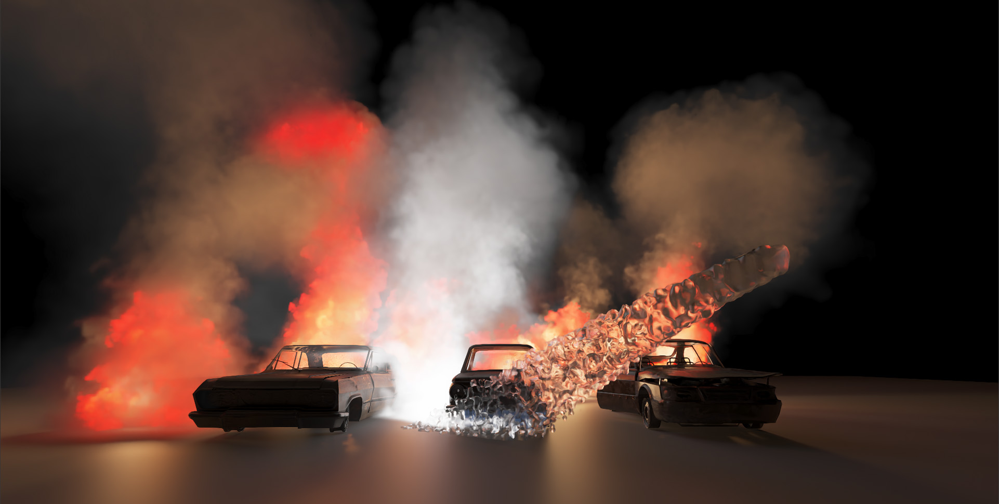

| |
ACM Transactions on Graphics (Proceedings of SIGGRAPH Asia), 2025
Fire-X:
Extinguishing Fire with Stoichiometric Heat Release

Abstract
We present a novel combustion simulation framework to model fire phenomena across solids, liquids, and gases.
Our approach extends traditional fluid solvers by incorporating multi-species thermodynamics and reactive
transport for fuel, oxygen, nitrogen, carbon dioxide, water vapor, and residuals. Combustion reactions are
governed by stoichiometry-dependent heat release, allowing an accurate simulation of premixed and diffusive
flames with varying intensity and composition. We support a wide range of scenarios including jet fires, water
suppression (sprays and sprinklers), fuel evaporation, and starvation conditions. Our framework enables
interactive heat sources, fire detectors, and realistic rendering of flames (e.g., laminar-to-turbulent
transitions and blue-to-orange color shifts). Our key contributions include the tight coupling of species
dynamics with thermodynamic feedback, evaporation modeling, and a hybrid SPH-grid representation for the
efficient simulation of extinguishing fires. We validate our method through numerous experiments that
demonstrate its versatility in both indoor and outdoor fire scenarios.
Video
Paper (soon)
Citation (soon)
|
|